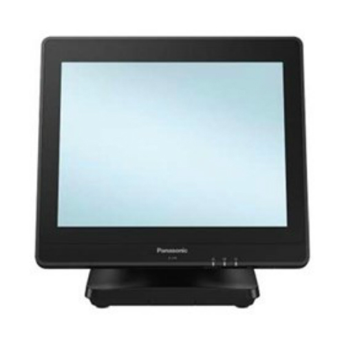

Welcome!
Welcome to the Johnson Partners, Inc. Technology Department page! Here you will find short overviews of hardware in your restaurant, as well as interactive troubleshooters in the navigation bar to the left. Please note the overviews are not visible on mobile devices and can only be seen on a desktop or laptop computer. If you have any questions about our technology or have any issues to report, please submit a ticket on MyQsrSoft, or contact our OTP3 via the links below.
Hardware Overviews
Registers
Our restaurants have two primary models of registers: the Panasonic JS-970 (left) and the PAR ES650 (right). Most stores are strictly one or the other, but there are a few occasions where both models are found in a single store.

All restaurants should have at least six (6) registers deployed. A few stores may have a dedicated register at their delivery station. Below you will find a description of each register's function:
| Device | Function |
|---|---|
| Register 1 | Front counter order taker. Backup production to POS server. |
| Register 2 | Front counter order taker. |
| Register 3 (if installed) | Dedicated delivery register. |
| Register 12 | Drive thru order taker. Controls order output to ICOD in lane 1 |
| Register 13 | Back drive thru cashier. |
| Register 14 | Drive thru order taker. Controls order output to ICOD in lane 2. Controls drink orders sent to ABS. |
| Register 15 (if installed) | Drive thru order taker. |
Please note Register 1 is very important due to its secondary function. Register 1 serves as backup production to the POS server. Should the server go down, Register 1 would need to be up and running to serve as the failover system. If there are any issues with Register 1, it is imperative they be resolved as soon as possible.
Back to TopKiosks
All locations have self-order kiosks installed in the dining room. These kiosks give our customers the option to place their orders themselves and pay at the kiosk without going to the front counter. Depending on the volume, one location could have two double-sided kiosks, one double-sided kiosk, or a double-sided and single-sided kiosk.
We have two different models of kiosks in our restaurants: Zivelo and Diebold. You can identify the kiosk models by how you open the printer access door. Zivelo kiosks use a push-button and lever system, whereas the Diebold kiosks use a magnet to open the door. Both require a key to open the kiosk to access the controller.
Back to TopCard Readers
In compliance with the Cashless 3.0 standard, all of our restaurants use Verifone MX915 Payment Entry Devices (PEDs). These card readers allow for cashless payment via card swipe, chip cards, and mobile payment via Samsung Pay, Apple Pay, Google Pay, or other NFC payment method.
There should be one card reader for each register taking payments. At a minimum, there should be three (3) card readers, but some stores could have as many of seven (7) deployed.
Back to TopKitchen Video System
All of our restaurants use a video system for both production and service areas. This video system is controlled by an array of thin client computers, either Dell Wyse or HP T630. Typically a store has one or the other, but there are some cases of mixed setups.
For CBB stores, there are five (5) KVS controllers. For BDAP stores, there are seven (7) controllers. Below is a list of each KVS controller, where it's located and what functions it performs:
| Device | Location | Function |
|---|---|---|
| KVS 1 | Behind side 1 lunch monitor | Controls lunch monitors, side 1 printers, and lunch bump bars |
| KVS 2 | Behind either side 2 breakfast monitor or DT expo monitor | Controls breakfast monitors, side 2 printers and breakfast bump bars |
| KVS 3 | Behind FC expo monitor | Controls FC and DT expo monitors, bump bars, and Dual Point printer (if installed) |
| KVS 4 | Behind DT expo monitor (BDAP). Mounted on valance wall in DT present (CBB). | Controls DT present monitor(s) and CBB monitor (if installed). |
| KVS 5 | Hot Off The Grill (HOTG) | Controls HOTG monitor and bump bar |
| KVS 6 (BDAP) | Behind one BDAP monitor | Controls single BDAP monitor, bump bar, and both BDAP printers |
| KVS 7 (BDAP) | Behind one BDAP monitor | Controls single BDAP monitor and bump bar |
Back Office
The back office houses the bulk of our systems that control everything in the restaurant.
The Back Office Server (BOS) is the main computer used in the back office. This server allows access to CIT functions and limited Internet access to McDonald's approved websites.
The POS Server is the main hub for our POS functions. It is the primary production node for routing orders from the registers to the KVS controllers.
Each location has a closed-circuit surveillance system to monitor our restaurant 24/7 and has a dedicated monitor to allow for viewing live feeds and recorded playback. All CCTV footage is stored on a digital video recorder (DVR) or network video recorder (NVR).
Each location also has a dedicated email system to allow complete Internet access. Since the Internet access on the BOS is limited to the McDonald's approved whitelist, this computer allows managers to access their Gmail accounts as well as all other websites and tools owned and maintained by Johnson Partners, Inc.
These four computers are all connected by a KVM switch. To access each system, you can either press the appropriate input key on the KVM switch or use the appropriate hotkeys on the keyboard listed below:
| Device | Input | Hotkey |
|---|---|---|
| Back Office Server | PC1 | Scroll Lock → Scroll Lock → 1 |
| POS Server | PC2 | Scroll Lock → Scroll Lock → 2 |
| Camera System | PC3 | Scroll Lock → Scroll Lock → 3 |
| E-mail System | PC4 | Scroll Lock → Scroll Lock → 4 |
Digital Menu Boards
All restaurants have both Indoor Digital Menu Boards (IDMBs) and Outdoor Digital Menu Boards (ODMBs).
Indoor Digital Menu Boards are set up as an array of five 47-inch or 49-inch displays set either vertically or horizontally with a media player for each display. Each media player has both primary content for it's main display and backup content for its neighbor to the right.
Outdoor Digital Menu Boards are two vertical displays in an external enclosure and up to two pre-sell boards in single display enclosures. Each display has its own media player.
ODMBs also use an Integrated Customer Order Display (ICOD). This replaced the legacy COD formerly housed in the drive thru lane's canopy. It shows on the left panel of the ODMB while placing the order, and the entire order is displayed on the left panel when the order is stored, allowing for better order confirmation by the customer. Please note if the left panel is displaying backup content, the ICOD will not display.